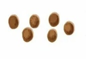
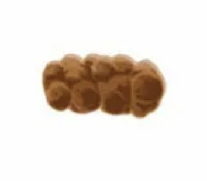
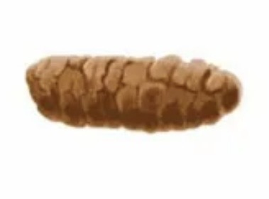
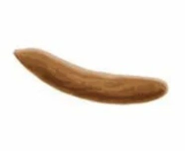
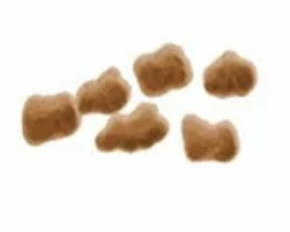
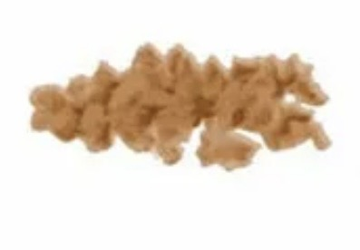

Как правильно ходить в туалет, использовать Squatty Potty, не тужиться,
а также рекомендации по питанию и массажу живота для мягкого и комфортного стула.
Основано на: клинических рекомендациях WHO, NICE, ACOG
Для кого: женщины в послеродовом периоде
Формат: практическое руководство с упражнениями и красными флагами
Документ является общим ориентиром и не заменяет консультацию врача.
Индивидуальные рекомендации могут отличаться. Перед началом любых действий
— и при появлении тревожных симптомов — обратитесь к специалисту.
Всем привет! Меня зовут Кузменькова Елена.
Я фитнес-тренер, инструктор ЛФК, акушерка и мама. Полгода назад у меня появился сын путем кесарева сечения, и мне очень хотелось собрать всю основную информацию о восстановлении в одном месте. Запоры после родов — одна из самых частых и неприятных проблем, и этот гайд поможет с ней справиться мягко и безопасно.
Запоры после родов — одна из самых частых проблем, с которой сталкиваются женщины. Гормональные изменения, ослабление мышц тазового дна, страх боли при натуживании, а также обезболивающие препараты — всё это может замедлить работу кишечника.
Эта памятка поможет вам:
✔ Понять, какой стул считается нормальным (Бристольская шкала)
✔ Научиться правильно ходить в туалет, чтобы не травмировать промежность и швы
✔ Использовать Squatty Potty для правильной позы
✔ Скорректировать питание для мягкого стула
✔ Делать массаж живота для стимуляции перистальтики
Важное примечание. Запоры могут быть опасны в послеродовом периоде, особенно при наличии швов или геморроя. Не стесняйтесь обращаться к врачу при любых сомнениях.
Бристольская шкала
Раздел 1
Бристольская шкала кала
Бристольская шкала — это медицинский инструмент для оценки формы и консистенции стула. Она помогает понять, есть ли у вас запор, норма или диарея.
Тип 1

Отдельные твёрдые комочки, как орехиЗАПОР
Тип 2

Колбасовидный, но комковатыйЗАПОР
Тип 3

Колбасовидный, с трещинами на поверхностиНОРМА
Тип 4

Колбасовидный или змеевидный, гладкийНОРМА
Тип 5

Мягкие шарики с чёткими краямиНОРМА
Тип 6

Кашицеобразный, с рваными краямиДИАРЕЯ
Тип 7Водянистый, без твёрдых кусочковДИАРЕЯ
Цель: стремитесь к Типу 3 или 4 — это идеальная консистенция для комфортного и безопасного стула, особенно в послеродовом периоде.
Правильная техника
Раздел 2
Как правильно ходить в туалет
Главное правилоНе тужиться! Натуживание создаёт давление на тазовое дно, промежность и швы. Вместо этого используйте технику «дыхания на выдохе».
🌬️
Техника «дыхания на выдохе»
нажмите для техники
🧘
Расслабление тазового дна
нажмите для техники
📋 Пошаговый алгоритм:
Сядьте на унитаз — не торопитесь.
Ноги на полу (или на подставке — см. раздел о Squatty Potty).
Сделайте вдох животом, затем выдох — и на выдохе мягко расслабьте мышцы тазового дна.
Не задерживайте дыхание и не напрягайтесь.
Если стул не выходит — не давите. Встаньте, походите, выпейте воды — попробуйте позже.
⚠️ Чего делать НЕЛЬЗЯ:
❌ Натуживаться («тужиться»)
❌ Задерживать дыхание на выдохе
❌ Сидеть на унитазе дольше 5–7 минут
❌ Игнорировать позывы к дефекации
Правильная поза
Раздел 3
Squatty Potty — правильная поза для дефекации
Squatty Potty — это небольшая подставка для ног, которая помогает принять естественную позу «на корточках». В таком положении прямая кишка выпрямляется, и стул выходит легче, без натуживания.
🪑
Как использовать Squatty Potty
нажмите для техники
💡 Совет:
Если у вас нет специальной подставки, используйте небольшую скамейку, стопку книг или перевёрнутый ящик. Главное — чтобы колени были выше бёдер.
Почему это работает: В такой позе снижается давление на промежность, швы и геморроидальные узлы, а кишечник опорожняется мягко и естественно.
Питание
Раздел 4
Питание от запоров
Правильное питание — основа мягкого стула. Вот что должно быть в вашем рационе ежедневно.
💧
Вода
1,5–2 л в день
🥗
Клетчатка
овощи, фрукты, цельнозерновые
🫘
Кисломолочные
кефир, йогурт (живые культуры)
🌿
Масла
оливковое, льняное (1–2 ч.л.)
🍎
Продукты, которые помогают
нажмите для списка
🚫
Продукты, которые усиливают запор
нажмите для списка
Массаж
Раздел 5
Массаж живота от запоров
Массаж живота стимулирует перистальтику и помогает кишечнику «проснуться». Делайте его каждое утро на голодный желудок — перед завтраком.
🎬 Массаж живота от запоров
🤚
Техника массажа живота
нажмите для подробной техники
⏰ Когда делать:
Каждое утро, до завтрака, лёжа на спине. Длительность: 5–7 минут. Движения — мягкие, по часовой стрелке.
Противопоказания: не делайте массаж при болях в животе, температуре, вздутии с сильным дискомфортом или после недавней операции на брюшной полости (при кесаревом — только после разрешения врача и заживления шва).
В заключение
Красные флаги
В большинстве случаев запоры после родов проходят с коррекцией питания и образа жизни. Но есть симптомы, при которых нужно немедленно обратиться к врачу.
🚨 НЕМЕДЛЕННО ОБРАТИТЕСЬ К ВРАЧУ, ЕСЛИ:
Запор длится более 3–4 дней без результата
Сильная боль в животе, которая не проходит
Кровь в кале (алая или тёмная)
Тошнота, рвота, повышение температуры
Отсутствие стула в сочетании с вздутием и задержкой газов
Важно! Не стесняйтесь обратиться к врачу. Своевременная помощь поможет избежать осложнений, особенно при наличии геморроя, швов или кесарева сечения.